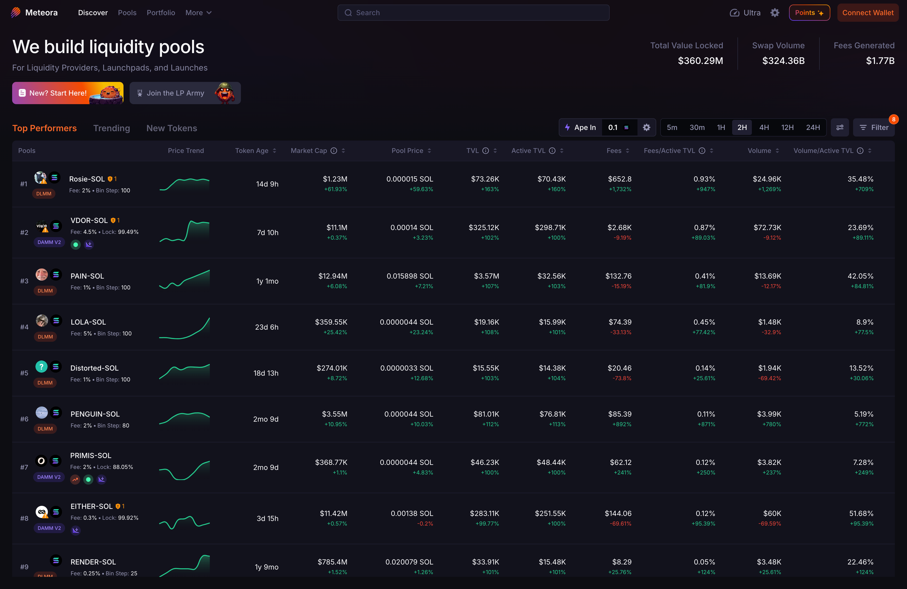

AI Website Builder
In the rapidly evolving world of blockchain technology, innovative projects are emerging to address the challenges faced by decentralized finance (DeFi) and non-fungible tokens (NFTs). One such groundbreaking initiative is Meteora on Solana. This project leverages the high-speed, low-cost capabilities of the Solana blockchain to create a unique ecosystem for DeFi and NFT applications. This article explores the features, benefits, and implications of Meteora on Solana, highlighting its potential to transform the digital asset landscape.
Meteora is a decentralized platform built on the Solana blockchain that aims to streamline the creation, management, and trading of digital assets, particularly focusing on DeFi and NFTs. By harnessing Solana's high throughput and low transaction costs, Meteora provides users with a seamless experience in interacting with digital assets and financial services.
Key Features of Meteora
High-Speed Transactions: Leveraging Solana's architecture, Meteora can process thousands of transactions per second (TPS). This speed is crucial for users engaging in fast-paced trading and DeFi activities.
Low Transaction Fees: One of the significant advantages of using Solana is its minimal transaction fees. Meteora users benefit from cost-effective transactions, making it an attractive platform for both small and large-scale operations.
User-Friendly Interface: Meteora prioritizes user experience with an intuitive interface that simplifies the process of managing assets, trading, and participating in DeFi protocols.
Interoperability: The platform supports cross-chain compatibility, allowing users to interact with various blockchain networks and protocols. This feature enhances the versatility of digital asset management.
Decentralized Governance: Meteora incorporates decentralized governance mechanisms, enabling users to participate in decision-making processes regarding platform updates, feature enhancements, and community initiatives.
Challenges in Existing DeFi and NFT Platforms
The DeFi and NFT landscapes have experienced explosive growth, but they also face several challenges, including:
Scalability Issues: Many blockchain networks struggle to handle the increasing number of transactions, resulting in slow processing times and network congestion.
High Fees: Users often encounter exorbitant gas fees, particularly during peak times, which can deter participation in DeFi and NFT markets.
Complex User Experiences: Many existing platforms have steep learning curves, making it difficult for newcomers to navigate the ecosystem.
Fragmented Ecosystem: The lack of interoperability between different blockchains limits users' ability to transfer assets and engage with various protocols seamlessly.
The Promise of Meteora on Solana
Meteora addresses these challenges by leveraging the strengths of the Solana blockchain. By providing a high-speed, low-cost, and user-friendly platform, Meteora aims to create a more inclusive and efficient ecosystem for digital assets.
1. Enhanced Scalability
Meteora’s integration with the Solana blockchain allows it to scale efficiently as the user base grows. With Solana’s ability to handle thousands of transactions per second, Meteora can accommodate increasing demand without sacrificing performance.
2. Cost-Effectiveness
The low transaction fees associated with Solana make Meteora an attractive option for users. Whether engaging in DeFi trading or minting NFTs, users can enjoy significant savings, which is especially beneficial for smaller investors.
3. Simplified Access to DeFi and NFTs
Meteora’s user-friendly interface lowers the barrier to entry for newcomers. By streamlining the process of accessing DeFi protocols and NFT marketplaces, Meteora encourages greater participation in the digital asset ecosystem.
4. Interoperable Ecosystem
Meteora's focus on interoperability allows users to engage with various blockchain networks and DeFi projects. This flexibility enhances the overall user experience and fosters collaboration across different platforms.
5. Community-Driven Development
By incorporating decentralized governance, Meteora empowers its community to play an active role in shaping the platform’s future. Users can propose changes, vote on initiatives, and contribute to the overall development of the ecosystem.
1. Decentralized Finance (DeFi)
Meteora provides a robust framework for DeFi applications, allowing users to lend, borrow, and trade digital assets seamlessly. The platform supports various DeFi protocols, enabling users to earn yield on their holdings and participate in liquidity pools.
2. Non-Fungible Tokens (NFTs)
The NFT marketplace on Meteora allows creators and collectors to mint, buy, and sell digital assets easily. By leveraging Solana’s speed and efficiency, users can engage in real-time trading and explore new opportunities in the NFT space.
3. Gaming and Metaverse Integration
Meteora aims to bridge the gap between gaming and NFTs by facilitating the creation of in-game assets and virtual goods. Gamers can own, trade, and utilize their digital assets across different platforms, enhancing the gaming experience.
4. Cross-Chain Asset Management
Meteora’s interoperability allows users to manage assets across multiple blockchain networks. This capability enables seamless transfers and interactions with various DeFi and NFT platforms, expanding users' options and flexibility.
5. Tokenized Real-World Assets
Meteora can facilitate the tokenization of real-world assets, such as real estate or commodities, enabling fractional ownership and increased liquidity. This feature opens new investment opportunities for users and democratizes access to various asset classes.
1. Regulatory Landscape
As the DeFi and NFT sectors continue to grow, regulatory scrutiny is likely to increase. Meteora must navigate the evolving landscape of cryptocurrency regulations to ensure compliance while maintaining its decentralized ethos.
2. Security Risks
While blockchain technology offers enhanced security, vulnerabilities still exist. Meteora must implement robust security measures to protect user assets and data from potential threats.
3. Market Volatility
The value of digital assets, particularly in the DeFi and NFT spaces, can be highly volatile. Users must be aware of the risks associated with investing in these markets and conduct thorough research before participating.
4. Adoption Challenges
While Meteora aims to simplify access to DeFi and NFTs, educating users about the platform and its features will be crucial for widespread adoption. Initiatives to promote awareness and understanding will play a significant role in building a user base.
1. Continuous Innovation
As the digital asset landscape evolves, Meteora will likely continue to innovate and introduce new features. Enhancements in user experience, security, and functionality will be essential for maintaining competitiveness in the market.
2. Expanding Partnerships
Strategic partnerships with other DeFi and NFT projects can enhance Meteora’s ecosystem. Collaborations may lead to improved interoperability, new use cases, and increased visibility within the broader blockchain community.
3. Community Engagement Initiatives
Meteora may implement initiatives to strengthen community engagement, such as educational resources, webinars, and events. Fostering a vibrant community will be crucial for the platform's long-term success.
4. Sustainable Practices
As the blockchain industry faces scrutiny over environmental concerns, Meteora may adopt sustainable practices to minimize its ecological footprint. This could include initiatives to offset carbon emissions or support environmentally friendly projects.
Meteora on Solana represents a significant advancement in the DeFi and NFT ecosystems, providing a high-speed, low-cost platform for managing digital assets. By addressing the challenges faced by existing platforms, Meteora aims to create a more inclusive and efficient environment for users. With its commitment to innovation, community-driven development, and interoperability, Meteora is well-positioned to shape the future of digital assets. As the project continues to evolve, it holds the potential to empower individuals and drive the adoption of decentralized finance and NFTs, making them accessible to a broader audience. Whether you are a seasoned investor or a newcomer to the blockchain space, Meteora offers exciting opportunities to explore and engage with the digital asset landscape.
AI Website Builder